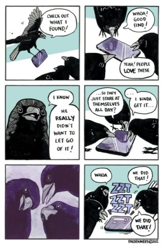

--Jed McKenna
"Do not mistake bliss for awareness- it comes and goes; it's not always there."
--Rupert Spira
"Reality and completeness are in plain sight. Absolute completeness surrounds you wherever you go. We humans have long ago deceived ourselves into such a confined tangle of confusion and disarray that we scarcely even consider, much less experience for ourselves, the divinity within and all around us.”
--Adyashanti
Attaining enlightenment. Making bliss show up and then exploring what actions will make it stay, forever.
Being so good at your practice, whatever it is, that you force existence to funnel into, “Bingo! I did it!”
By the power of your shifted focus, your desire, your “I did this and then that.” By the power of your right teacher and good choices and going inward instead of out.
“Whatever you did, it worked.”
Apparently what moves that ball closer and closer to the goal, is you.
And of course who wouldn't like the idea of getting close, as if there is a literal path with an end-point up the road?
Although, is, “getting close,” actually close?
Meanwhile, the same you who says, I am not the doer thinks you’re the one who does enlightenment. As long as you do things right. There may not be free will and control but still, you expect to have the power to awaken.
As if awakening is holding back until it sees whether things are being honed properly.
Although that does leave unexplained how so many people do absolutely nothing for their pop and it comes anyway. And how so many people do everything right, and... nada.
Sit on the meditation pillow, do all the satsangs and silent retreats and internal inquiries and GET IT, while the guy on the cushion right next to you does the same program with the same sincerity, and doesn’t.
If those “tools” are what produced the desired result, then shouldn't they work every time?
If there’s doubt about this, if you’re convinced it’s you who sets the stage to allow awakening to show up, then great, go for it, and put all that cause-effect effort to the test.
Right now. Make it happen.
What are you waiting for?
What you’re waiting for is for existence to grant the grace that makes your efforts pay off.
All you can do is pretend you have tools for control, and hope lightning will strike.
Which means it’s up to the lightning, not anyone’s efforts.
As you’ve probably read and heard many times, If you’re doing it, that’s not it.
It’s not the self that gets enlightened.
So, sure, you strive to be the one who arrives at the mountaintop. But you can never be that one.
The person cannot awaken.
Assuming awakening is even possible.
I mean, is it possible for the self to eliminate itself, while also depending on itself to create a “shift?”
Consciousness is not some personal ladder-climbing achievement for an individual Me.
The individual is part of and included in consciousness.
Already.
Awake or not.
And one person’s “heightened awareness” is just one more thing consciousness gets to experience.
Within consciousness.
No better, no more special, no more evolved, and not even higher, than no awareness at all.
Of course there’s no reason to stop doing all the various actions in hopes of bringing a result, if you want to.
Meditate, inquire, sit silently- why not?
You can even continue trying to have it both ways.
Saying, I’m not the doer while thinking it's up to you to make awakening happen. Saying, This happening is the result of all my efforts beforehand, while also saying, There is no I. Saying, This is it while yearning for a different It.
None of that is wrong. Sometimes it even feels good, comforting, reassuring. Sometimes there’s a lightening of self, a sense of spaciousness or peace or non-existence.
It's just that the self will attribute any attainment to its own actions.
Reinforcing itself.
Because that which is concerned with attainment and What-You-Are and whether you exist and whether you get enlightened in the first place,
is you.
Of course the self will come up with answers that confirm, as opposed to eliminate, itself.
So hopefully those answers are satisfying.
Still it remains though,
that no individual can control
what will not be controlled.
